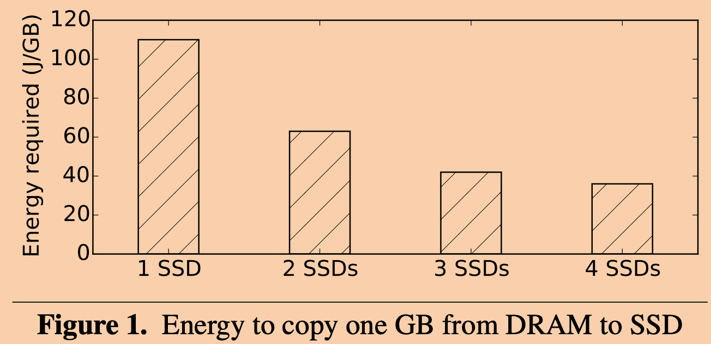

本文是我阅读这篇论文过程中的笔记，以及自己的思考。
简介
通常来说分布式系统、分布式事务、可用性、高性能和一致性之间往往都需要进行取舍，过去的分布式系统为了提高性能要么就压根不支持事务，或者只支持单机事务，又或者需要在一致性上做出牺牲。
FaRM是一个分布式对象存储系统，只支持单个数据中心内部署，支持数据分片、分布式事务，高容错性，支持的接口有读、写、事务开始、事务提交。虽然FaRM只是微软的一个实验室项目并没有投产，但是由于其良好的设计充分发掘了硬件设备的潜力，得到了超高的性能，所以其设计思路值得参考。
下面是一个典型的FaRM事务伪代码：
1 | txCreate() |
FaRM的特色主要在于：
- 数据不直接写入磁盘或者SSD，而是使用NVDRAM（non-volatile DRAM）来存储数据。消除了磁盘瓶颈。
- 使用RDMA（Remote Direct Memory Access）来绕过操作系统内核代码，充分利用NIC（Network Interface Card）的潜力。消除了网络上的瓶颈。
- 使用OCC（Optimistic Concurrent Control）来实现分布式事务，减少了阻塞。
设备介绍
NVDRAM
NVDRAM使用上和正常的DRAM差不多，差别在于NVDRAM可以安装一个电池，该电池在机房断电的时候，会自动开始供电，里面的电量能够支持机器正常运行一段时间。

当电池系统检测到了断电发生，然后接管了供电任务之后，会给其供电的机器发送一个通知，而运行在机器上的服务在收到该通知之后会开始拒绝服务之后的客户端请求，然后将内存中的所有数据写入SSD中进行持久化存储，等到写入完成后，机器会自动关机。
根据上图，可以看到，当同时向多个SSD拷贝时，用电更少。
等到电力恢复后，机器重启会重新从SSD将数据读取到内存，恢复状态。
因为NVDRAM只能应对断电错误，像磁盘故障、软件错误等等的其他错误并不能很好的应对，所以冗余备份也是必要的。所以FaRM会对每个数据分片在副本服务器上进行备份。
RDMA
在介绍RDMA之前，先简要的介绍一下传统的网卡工作流程。
在传统的系统中，网络请求发送方需要先向内核发起一个系统调用，此时系统将从用户态切换到内核态，在内核中，需要先经过socket层，再经过网络协议栈（TCP），然后是网卡驱动，最后才到网卡将数据包发送到网络上。同样的，接收方要经过网卡、网卡驱动、网络协议栈，最后到了socket层，此时应用程序会收到中断，为了能够让应用程序读取这些网络数据，内核还会将数据从内核拷贝到用户内存中。
可以看到整个过程并不十分高效，大部分时间都在操作系统内核中消耗掉了。正是因为这些消耗，使得网卡大部分时间是闲置的，无法充分利用网卡的潜力。

为了解决上述问题，FaRM使用的是一种特殊的网卡，这种网卡能够识别并执行一些收到的数据包中的一些特殊的命令。比如数据包中可以要求网卡将数据直接写入一个指定一个内存地址，或者要求网卡直接从指定的内存地址读取数据并且将数据通过网络发回。另外RDMA网卡能够允许应用代码直接将数据包传给网卡，并且保证在当收到请求回复ACK时通知到应用程序。
根据论文中的数据，使用RDMA实现的读写操作只需要1/18微秒，而传统的RPC则需要10微秒。
具体的使用上，RDMA网卡会在内存中有两种队列，一种队列用于存放想要发送的请求，另一种队列用于存放收到的请求。
这种模式的缺点可能有：
- 用户程序可能需要不断轮询接收队列来即时看到新的收到的消息。
- 之前TCP协议栈做的事情，需要在应用层处理。为不从轮子造起，可以使用一些现有的库比如DPDK。
基本架构

FaRM中存储的数据会分配到一个个Region中，这些Region会分散到不同的存储服务器集群上进行存储。每个存储服务器集群会存在f个副本副本器和1个主服务器。主服务器会执行读写请求，而副本服务器只会执行写请求以此和主服务器保持数据一致。
在各个存储服务器上会有一个应用线程，应用可以在任何时刻发起事务，这时它就变成了Transaction Coordinator。所有的用户线程会各自和一个内核线程所绑定，以此避免线程切换的开销。
存储服务器上首先会有一片内存用来存储Region数据，然后为其他每个主存储服务器都预留一块区域存储它们的log。应用线程会周期性的轮询这些log区域并执行应用log。
有一个机器作为CM（configuration manager）用来存储各个每个存储服务器存储了哪些Region，还有保存着各个服务器的状态，而服务器状态数据的来源为ZooKeeper。
OCC事务实现

上图中P1，P2，P3分别为主存储节点，B1，B2，B3分别为对应的副本节点。虚线表示RDMA读，实线代表RDMA写操作，方块表示对象数据，点状线表示硬件ACK。
数据单元在存储服务器上存储的格式为：第一个位代表lock，紧接着的是版本号version，剩下的是数据。
假设现在有事务需要修改P1和P2上的某些数据，但是仅需要读取P3上的某些数据。那么整个事务的流程如下：
- 客户端发起事务，向所需数据所在的主存储服务器发起读请求，读到数据后在本地执行事务逻辑缓存事务执行结果。注意此阶段读到的数据中是包含数据的version字段的。
- LOCK：coordinator发起RDMA写请求到P1和P2，写请求会以log的形式被追加到他们所属的log区域，log的内容包含ObjectID，数据的新值，数据的version，P1和P2在检测到log后会先检查对应数据的LOCK位是否已经为1，如果是，那么通过RDMA返回失败（而2PC会选择阻塞等待）。如果为0，那么coordinator会在检查version是否一致，如果一致的话，那么将对应object的LOCK位设置为1（原子CAS操作），将并返回成功。
- 如果有任何一个服务器返回了失败，那么coordinator需要再次发送请求给P1和P2去解锁其已经锁定的数据，来终止事务。如果均返回成功，那么继续。
- VALIDATE：为了保证从P3读取的数据，没有被修改过，那么coordinator会再发送一次相读请求去读对象头数据，当coordinator发现读到的数据的version和之前的不同时，将放弃事务。如果相同，则继续。
- COMMIT BACKUP：coordinator向B1和B2发送和LOCK阶段完全相同的请求，然后等待收到所有的ACK回复后继续。
- COMMIT PRIMARY：coordinator向P1和P2通过RDMA写入commit log，然后在P1和P2通过轮询观察到commit log之后会将被修改后的数据写入DRAM，然后增加对象的version，释放LOCK位。
一些样例
假设T1和T2并发执行，他们的逻辑都是x=x+1，且x的初始值为0。
那么可能的正确结果只有：
- 2：T1和T2均执行成功。
- 1：T1和T2有一个成功。
- 0：T1和T2都不成功。
记R为读操作，L为lock阶段，C为commit primary那么对于下面的时间线：
T1：R0——Lx——Cx
T2：R0——Lx
同时执行，那么因为修改LOCK位为CAS操作，所以只有一个事务能够成功，最终x为1。
T1：——R0——Lx——Cx
T2：R0—————————Lx
T2的L会因为version不匹配而失败，最终x为1。
T1：R0——Lx——Cx
T2：——————————R0——Lx——Cx
都会成功，x为2。
下面换个例子：
假设T1和T2并发执行。x和y的初始值为0，T1和T2的逻辑分别如下：
1 | T1: |
可序列化的正确结果为：
- x和y其中一个为1或者x和y均为0（T1和T2均失败）
- 不应该出现x和y均为1的情况。
V为validate，考虑以下时间线：
T1: Rx——Ly——Vx
T2: Ry——Lx——Vy
这种情况下，T1和T2的validate都会失败，所以结果为x和y均为0。
T1: Rx——Ly——Vx——C
T2: Ry——————————Lx——Vy
这种情况下，的Vy会因为version不匹配导致T2回滚。而T1会成功，结果为x为0，y为1。